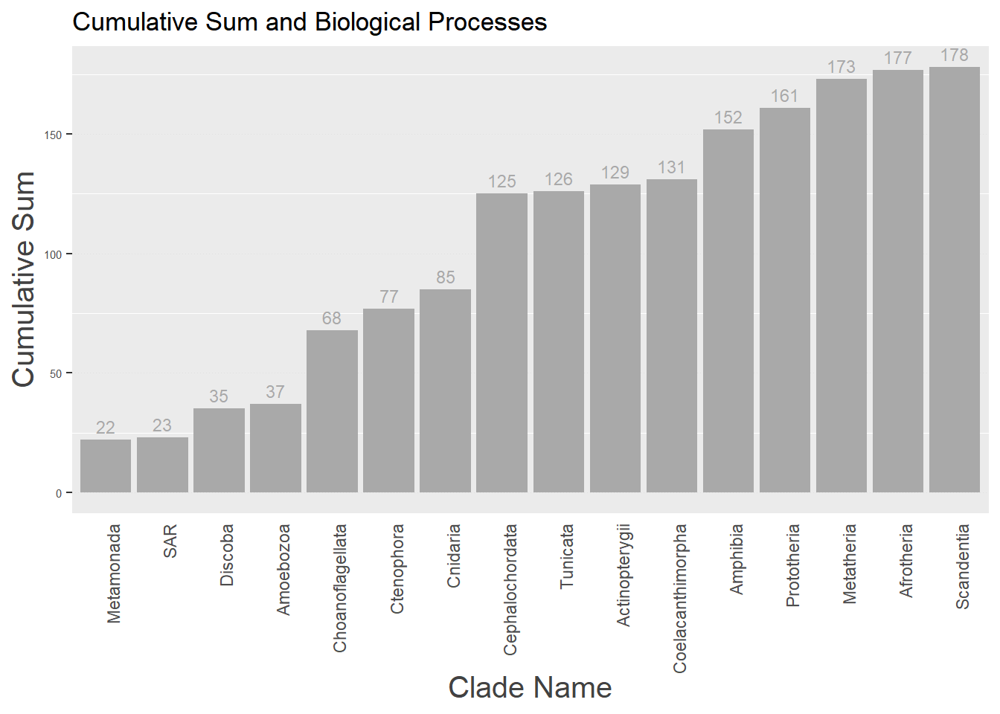
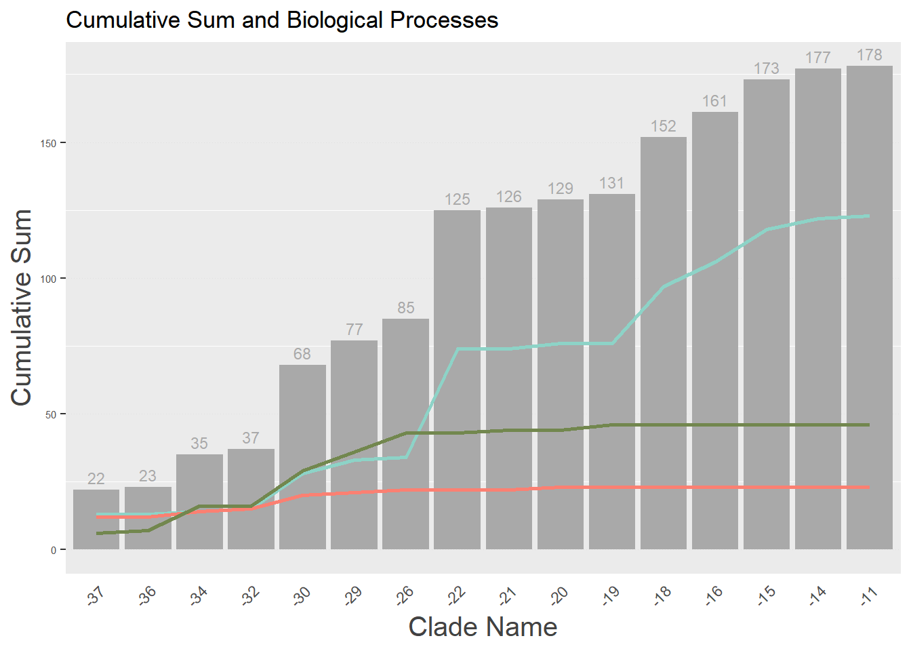
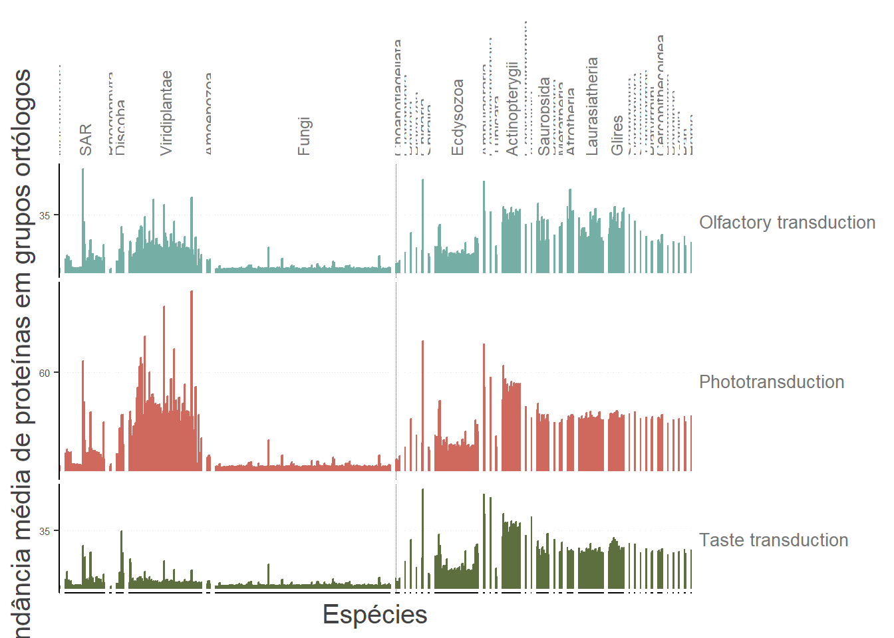
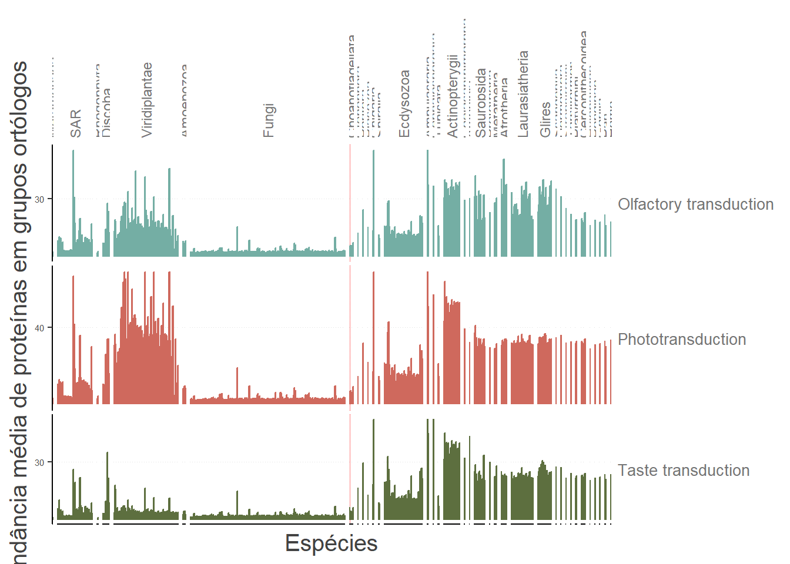
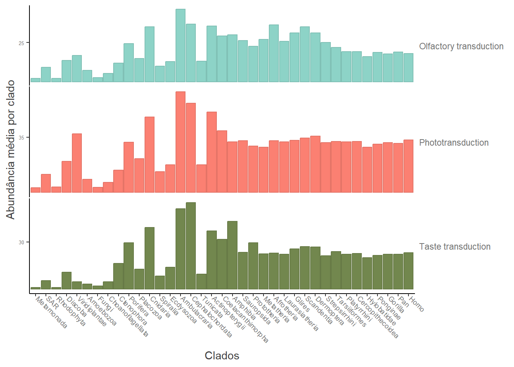

library(here)
library(readr)
library(magrittr)
library(ggplot2)
library(hrbrthemes)
library(tinter)
library(dplyr)
library(tidyr)
library(AnnotationHub)Plotting Abundance
1 Importando Pacotes
2 Definindo funções
Essas funções possuem a finalidade de organizar a anotação dos vértices de nossa nodelist e calcular o cumulativo de genes por clado e por processo biológico
calculate_cumulative_genes <- function(nodelist) {
# Obter todas as categorias possíveis de clade_name
all_clades <- node_annotation %>%
arrange(desc(root)) %>%
dplyr:: select(clade_name) %>%
unique()
# Definir as colunas de interesse
process_columns <- c("queryItem", "root", "clade_name",
"Olfactory transduction",
"Taste transduction",
"Phototransduction")
# Calcular o cumulativo agrupando por clade_name
cumulative_genes <- nodelist %>%
arrange(desc(root)) %>%
dplyr::select(all_of(process_columns)) %>%
group_by(clade_name, root) %>%
summarise(count_genes = n(), .groups = "drop") %>%
arrange(desc(root)) %>%
mutate(cumulative_sum = cumsum(count_genes)) %>%
right_join(all_clades, by = "clade_name") %>%
fill(cumulative_sum, .direction = "down")
return(cumulative_genes)
}
calculate_cumulative_bp <- function(nodelist) {
# Obter todas as categorias possíveis de clade_name
all_clades <- node_annotation %>%
arrange(desc(root)) %>%
dplyr:: select(clade_name) %>%
unique()
# Definir as colunas de interesse
process_columns <- c("queryItem", "root", "clade_name",
"Olfactory transduction",
"Taste transduction",
"Phototransduction")
# Calcular a soma cumulativa para cada processo biológico
cumulative_bp <- nodelist %>%
dplyr::select(all_of(process_columns)) %>%
distinct(root, queryItem, .keep_all = TRUE) %>%
mutate(across(all_of(process_columns[-c(1:3)]), ~ as.numeric(.))) %>%
group_by(root, clade_name) %>%
summarise(across(all_of(process_columns[-c(1:3)]),
~ sum(. , na.rm = TRUE)),
.groups = "drop") %>%
arrange(desc(root)) %>%
mutate(across(all_of(process_columns[-c(1:3)]), ~ cumsum(.))) %>%
right_join(all_clades, by = "clade_name") %>%
fill(everything(), .direction = "down")
return(cumulative_bp)
}3 Definindo parâmetros estéticos para o ggplot
Atribuindo cores padrões para as vias metabólicas da análise e definindo os demais padrões estéticos para plotagens
# Plotting colors and labels
annotation_colors <- c(
"Olfactory transduction" = "#8dd3c7"
,"Taste transduction" = "#72874EFF"
,"Phototransduction" = "#fb8072"
)
annotation_labels <- c(
"Olfactory transduction" = "Olfactory transduction"
,"Taste transduction" = "Taste transduction"
,"Phototransduction" = "Phototransduction"
)
# This vertical line indicates the first metazoan (Amphimedon queenslandica / Ctenophora)
choanoflagellata_line <- geom_vline(
xintercept = "Sphaeroforma arctica"
,color = "#FF0000"
,linetype = "11"
,alpha = 1
,linewidth = 0.25
)
# Plotting
theme_main <- theme(
panel.spacing = unit(2.5, "pt")
,strip.background = element_blank()
,panel.grid.major.x = element_blank()
,panel.grid.major.y = element_line(linewidth = 0.25, linetype = "dotted", color = "#E0E0E0")
,strip.text.x = element_text(size = 9, angle = 90, hjust = 0, vjust = 0.5, color = "#757575")
,strip.text.y = element_text(size = 10, angle = 0, hjust = 0, vjust = 0.5, color = "#757575")
,axis.title = element_text(size = 15, color = "#424242")
,axis.ticks.x = element_blank()
,axis.text.x = element_blank()
,axis.text.y = element_text(size = 5.5)
,legend.position = "none"
)
theme_supplementary <- theme(
panel.grid.major.x = element_line(color = "#E0E0E0", linewidth = 0.25, linetype = "dotted")
,panel.grid.major.y = element_blank()
,strip.text.y = element_text(size = 7, angle = 0, hjust = 0, vjust = 0.5, color = "#757575")
,strip.text.x = element_text(size = 7, angle = 90, hjust = 0, vjust = 0.5, color = "#757575")
,axis.title = element_text(size = 12, color = "#424242")
,axis.ticks = element_line(colour = "grey20")
,axis.text.y = element_text(size = 6, angle = 0, hjust = 1, vjust = 0.5, color = "#757575")
,axis.text.x = element_text(size = 6)
)
theme_average <- theme(
panel.spacing = unit(1, "pt")
,axis.title = element_text(color = "#424242")
,axis.text = element_text(color = "#757575")
,axis.text.x = element_text(size = 7, angle = -45, vjust = 0, hjust = 0)
,axis.text.y = element_text(size = 5)
,strip.background = element_blank()
,strip.text = element_text(color = "#757575")
,strip.text.y = element_text(angle = 0, hjust = 0, vjust = 0.5)
)
theme_big <- theme(
panel.spacing = unit(0.5, "pt")
,panel.grid.major.x = element_line(linewidth = 0.1, linetype = "dashed")
,panel.grid.major.y = element_blank()
,strip.background = element_blank()
,strip.text.x = element_text(size = 8, angle = 90, hjust = 0.5, vjust = 0)
,strip.text.y = element_text(size = 8, angle = 0, hjust = 0, vjust = 0.5)
,axis.text.x = element_text(size = 6, angle = 90, vjust = 0, hjust = 0)
,axis.text.y = element_text(size = 4.5)
,axis.ticks = element_line(size = 0.1)
)
tick_function <- function(x) {
seq(x[2], 0, length.out = 3) %>% head(-1) %>% tail(-1) %>% { ceiling(./5)*5 }
}4 Carregar tabelas necessárias
Para prosseguir com a análise, é necessário carregar uma tabela contendo informações do taxid de cada espécie. Essas informações serão posteriormente utilizadas para mapear os taxid das espécies com os taxid de cada COG.
4.1 Descrição da Tabela
- Nome do Arquivo:
string_eukaryotes.rda
- Conteúdo: Informações taxonômicas de espécies eucarióticas.
A tabela carrega os seguintes campos principais:
- TaxID (taxonomic identifier): Um identificador único associado a cada espécie. - Nome da espécie
# Query Phylotree and OG data
ah <- AnnotationHub()
meta <- query(ah, "geneplast")
load(meta[["AH83116"]])
# Todo: salvar tabelas dos qmd anteriores
nodelist <- vroom::vroom(file = here("data/nodelist.csv"), delim = ",")
gene_cogs <- vroom::vroom(file = here("data/gene_cogs.csv"), delim = ",")
sensorial_genes <- read.csv("../data/sensorial_genes.csv")
map_ids <- vroom::vroom("../data/map_ids.csv")
groot_df <- vroom::vroom("../data/groot_df.csv")
ogr <- readRDS("../data/ogr.RData")
load("../data/string_eukaryotes.rda")
head(string_eukaryotes)5 Visualização: Padrão de Enraizamento
Essa visualização permite analisar o padrão cumulativo de surgimento de genes ao longo do tempo evolutivo. Além disso, também mostra o crescimento dos processos biológicos separados por cada via metabólica.
5.1 Características dos Gráficos
- Gráfico de Barras (Padrão Cumulativo):
- Representa o somatório cumulativo de genes associados a cada clado.
- Cada barra exibe o total acumulado de genes em determinado clado, permitindo identificar o padrão de diversificação.
- Gráfico Combinado (Barras e Linhas):
- As barras indicam o somatório cumulativo de genes por clado.
- As linhas representam o crescimento de diferentes processos biológicos (Process), separados por vias metabólicas, permitindo a comparação entre o surgimento cumulativo de genes e o desenvolvimento de funções biológicas.
5.2 Interpretação
- Padrão Cumulativo: O gráfico de barras mostra como os genes foram surgindo ao longo do tempo, cumulativamente. Essa visão ajuda a identificar momentos de maior diversificação genética.
- Comparação por Processos Biológicos: O gráfico combinado permite observar quais processos biológicos se destacam em diferentes momentos da evolução e como eles estão relacionados ao surgimento de novos genes.
# Mapping roots and proteins info
node_annotation <- nodelist %>%
inner_join(gene_cogs, by = c("node" = "protein_id", "cog_id")) %>%
inner_join(sensorial_genes, by = c("queryItem" = "gene_symbol")) %>%
distinct(queryItem, cog_id, pathway_name, root, clade_name)
cumulative_genes <- calculate_cumulative_genes(nodelist)
cumulative_bp <- calculate_cumulative_bp(nodelist)
cumulative_data <- left_join(cumulative_genes, cumulative_bp)
long_data <- cumulative_data %>%
pivot_longer(cols = 5:7,
names_to = "Process",
values_to = "Value")
#a <-
ggplot() +
# Gráfico de barras para cumulative_sum
geom_bar(data = cumulative_data,
aes(x = factor(clade_name, levels = clade_name), y = cumulative_sum),
stat = "identity", fill = "darkgray", colour = NA) +
geom_text(data = cumulative_data,
aes(x = factor(clade_name, levels = clade_name), y = cumulative_sum, label = cumulative_sum),
vjust = -0.5, size = 3, color = "darkgray") +
scale_color_manual(values = annotation_colors) +
labs(x = "Clade Name", y = "Cumulative Sum",
title = "Cumulative Sum and Biological Processes",
fill = "Cumulative Sum",
color = "Biological Processes") +
theme_main +
theme(axis.text.x = element_text(angle = 90, hjust = 1))
#b <-
ggplot() +
# Gráfico de barras para cumulative_sum
geom_bar(data = cumulative_data,
aes(x = factor(-root), y = cumulative_sum),
stat = "identity", fill = "darkgray", colour = NA) +
geom_text(data = cumulative_data,
aes(x = factor(-root), y = cumulative_sum, label = cumulative_sum),
vjust = -0.5, size = 3, color = "darkgray") +
# Gráfico de linhas para os processos biológicos
geom_line(data = long_data,
aes(x = factor(-root), y = Value, color = Process, group = Process),
size = 1) +
# Usar a paleta de cores definida
scale_color_manual(values = annotation_colors) +
labs(x = "Clade Name", y = "Cumulative Sum",
title = "Cumulative Sum and Biological Processes",
fill = "Cumulative Sum",
color = "Biological Processes") +
theme_main +
theme(axis.text.x = element_text(angle = 45, hjust = 1))
#ggsave(file = "", plot=a, width=15, height=8)
#ggsave(file = "", plot=b, width=15, height=8)6 Cálculo da Abundância de COGs por Função nas Espécies
Esta análise parte da premissa de que COGs similares compartilham a mesma função biológica. Assim, é possível calcular a abundância média das funções associadas aos COGs em cada espécie, utilizando a quantidade de COGs presentes na espécie identificada pelo TaxID.
6.1 Etapas do Cálculo
- Mapeamento das Espécies
Cada espécie foi mapeada para seu respectivo clado (nível hierárquico) com base nas informações do TaxID.- Foi utilizada a tabela
ogr@spbranchespara associar espécies (ssp_id) com seus branches (lca). - Os dados foram organizados para incluir a ordem dos TaxIDs.
- Foi utilizada a tabela
- Anotação dos COGs
- A relação entre proteínas e genes foi enriquecida com informações funcionais, como identificadores de COGs e nomes de vias metabólicas (pathway_name).
- Duplicatas foram removidas para garantir que apenas informações únicas fossem consideradas.
- Integração de Informações das Espécies
- Foi criado um mapeamento entre espécies (TaxID) e seus respectivos clados para adicionar as informações taxonômicas relevantes.
- As espécies foram ordenadas com base em seus clados, para facilitar a análise hierárquica.
- Cálculo da Abundância Média por Função
- Para cada espécie e função metabólica (pathway_name), foi calculada a abundância média dos COGs.
- Informações adicionais, como nomes das espécies (ncbi_name) e clados (clade_name), foram integradas ao resultado.
- Ajuste da Abundância (Capping)
- Para evitar valores extremos, a abundância média foi ajustada:
- Valores acima de um limite (média + 3 desvios padrão) foram truncados para 100.
- Os valores ajustados foram calculados separadamente por função metabólica.
- Para evitar valores extremos, a abundância média foi ajustada:
lca_spp <- ogr@spbranches %>%
rename("taxid" = ssp_id, "species" = ssp_name, "lca" = "branch") %>%
mutate(taxid_order = row_number()) %>%
dplyr::select(lca, taxid, taxid_order)
clade_taxids <- lca_spp
clade_names <- vroom::vroom("https://raw.githubusercontent.com/dalmolingroup/neurotransmissionevolution/ctenophora_before_porifera/analysis/geneplast_clade_names.tsv")
cog_annotation <- map_ids %>%
left_join(groot_df, by = c("stringId" = "protein_id")) %>%
left_join(sensorial_genes, by = c("queryItem" = "gene_symbol")) %>%
distinct(queryItem, cog_id, pathway_name) %>%
dplyr::select(cog_id, pathway_name) %>%
unique() %>%
na.omit()
cog_abundance_by_taxid <- cogdata %>%
filter(cog_id %in% nodelist[["cog_id"]]) %>%
count(ssp_id, cog_id, name = "abundance") %>%
left_join(cog_annotation, by = "cog_id")
# Mapping species to clade info
ordered_species <- string_eukaryotes %>%
dplyr::select(taxid, ncbi_name) %>%
left_join(clade_taxids, by = "taxid") %>%
left_join(clade_names, by = c("lca" = "root")) %>%
na.omit() %>% unique() %>%
arrange(desc(lca)) %>%
dplyr::select(-taxid_order)
avg_abundance_by_function <- cog_abundance_by_taxid %>%
group_by(ssp_id, pathway_name) %>%
summarise(avg_abundance = mean(abundance)) %>%
ungroup() %>%
# Adding species and clade info
left_join(ordered_species %>% mutate(taxid = as.double(taxid)), by = c("ssp_id" = "taxid")) %>%
unique() %>%
arrange(desc(lca)) %>%
mutate(ncbi_name = factor(ncbi_name, levels = unique(ncbi_name)),
clade_name = factor(clade_name, levels = unique(clade_name))) %>%
na.omit()
capped_abundance_by_function <- avg_abundance_by_function %>%
# mutate(capped_abundance = ifelse(abundance >= 100, 100, abundance)) %>%
group_by(pathway_name) %>%
mutate(
# max_abundance = max(abundance[lca <= 29])
max_abundance = avg_abundance[lca <= 29] %>% { mean(.) + 3*sd(.) }
,abundance = ifelse(avg_abundance >= max_abundance, pmin(max_abundance, 100), pmin(avg_abundance, 100)))
# List of signatures
signatures <- unique(node_annotation$pathway_name)
roots_seq <- node_annotation %>%
arrange(desc(root)) %>%
dplyr:: select(root, clade_name) %>%
unique()
roots_seq$clade_name <- factor(roots_seq$clade_name, levels = roots_seq$clade_name)6.2 Visualização
Nos gráficos a seguir, é possível observar a abundância média dos COGs em cada clado. Cada barra representa uma espécie dentro do respectivo clado, enquanto as cores indicam as diferentes funções metabólicas associadas aos grupos ortólogos.
6.2.1 Gráfico de Abundância Média de COGs por Clado
- O eixo X representa as espécies.
- O eixo Y indica a abundância média de proteínas em grupos ortólogos.
- As barras são coloridas de acordo com a função metabólica (pathway_name).
6.2.2 Gráfico com Abundância Ajustada (Capped)
- Para evitar distorções causadas por valores extremos, a abundância foi ajustada a um limite máximo (média + 3 desvios padrão).
- Este gráfico fornece uma visualização mais equilibrada, especialmente para funções metabólicas com valores muito elevados.
# Plotting by species
ggplot(avg_abundance_by_function) +
# Geoms ----------------
choanoflagellata_line +
geom_bar(
aes(x = ncbi_name, y = avg_abundance, fill = pathway_name, color = after_scale(darken(fill, 0.1)))
,stat = "identity"
) +
# Labels ---------------
xlab("Espécies") +
ylab("Abundância média de proteínas em grupos ortólogos") +
#ylab("Average protein abundance in orthologous groups") +
# Scales ----------------
scale_y_continuous(breaks = tick_function, minor_breaks = NULL) +
scale_fill_manual(values = annotation_colors %>% darken(0.1)) +
# Styling ---------------
facet_grid(
pathway_name ~ clade_name
,scales = "free"
,space = "free"
,labeller = labeller(annotation = annotation_labels)
) +
theme_classic() +
theme_main
# Plotting by species capped
ggplot(capped_abundance_by_function) +
# Geoms ----------------
choanoflagellata_line +
geom_bar(
aes(x = ncbi_name, y = abundance, fill = pathway_name, color = after_scale(darken(fill, 0.1)))
,stat = "identity"
) +
# Labels ---------------
xlab("Espécies") +
ylab("Abundância média de proteínas em grupos ortólogos") +
#ylab("Average protein abundance in orthologous groups") +
# Scales ----------------
scale_y_continuous(breaks = tick_function, minor_breaks = NULL) +
scale_fill_manual(values = annotation_colors %>% darken(0.1)) +
# Styling ---------------
facet_grid(
pathway_name ~ clade_name
,scales = "free"
,space = "free"
,labeller = labeller(annotation = annotation_labels)
) +
theme_classic() +
theme_main
6.2.3 Visualização Simplificada: Abundância por Clado
Para uma análise menos detalhada, é possível visualizar a abundância média de COGs apenas a nível de clado, ignorando as diferenças entre espécies individuais. Este gráfico fornece uma visão geral mais direta, ideal para identificar tendências globais.
- O eixo X representa os clados.
- O eixo Y mostra a abundância média de proteínas em grupos ortólogos por clado.
- As barras são agrupadas por clado e coloridas de acordo com as funções metabólicas (pathway_name).
# Ploting by clade
ggplot(avg_abundance_by_function) +
geom_bar(
aes(x = clade_name, y = avg_abundance, fill = pathway_name, color = after_scale(darken(fill, 0.1)))
,stat = "summary"
,fun = "mean"
) +
scale_y_continuous(breaks = tick_function, minor_breaks = NULL) +
scale_fill_manual(values = annotation_colors, guide = "none") +
facet_grid(
pathway_name ~ .
,scales = "free"
,space = "free_y"
,labeller = labeller(annotation = sub("\n", "", annotation_labels))
) +
xlab("Clados") +
ylab("Abundância média por clado") +
theme_classic() +
theme_average